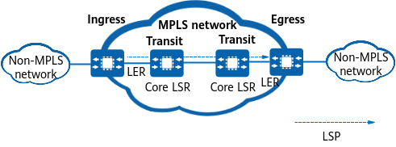
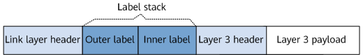

Figure 1 shows the typical MPLS network structure: Label switching routers (LSRs) are the basic elements, and multiple LSRs form an MPLS domain. An LSR that resides at the edge of an MPLS domain and connects to a non-MPLS network is called a label edge router (LER). An LSR that resides inside an MPLS domain is called a core LSR. Specifically, if an LSR connects to one or more MPLS-incapable nodes, the LSR is an LER. If all adjacent nodes of an LSR run MPLS, the LSR is a core LSR.
MPLS forwards packets based on labels. Specifically, when an IP packet enters an MPLS network, the ingress LER analyzes the packet content and adds an appropriate label to the IP packet. All nodes on the MPLS network forward the packet based on labels. When the IP packet leaves the MPLS network, the egress pops (removes) the label in the packet.
The path through which IP packets are transmitted on an MPLS network is called a label switched path (LSP). An LSP is a unidirectional path that is in the same direction as the data flow.

On an LSP, the start node is referred to as the ingress, intermediate nodes as transit nodes, and the end node as the egress. An LSP has one ingress, one egress, and zero, one, or multiple transit nodes.
A forwarding equivalence class (FEC) refers to a group of data flows forwarded in the same manner. Data flows in the same FEC are processed by LSRs in the same way.
FECs can be classified based on addresses, service types, or QoS policies, among others. For example, in IP forwarding, packets matching the same route based on the longest match rule belong to an FEC.
A label is a short, fixed-length identifier that has local significance. It is used to uniquely identify the FEC to which a packet belongs. In some cases, for example, when load balancing is required, one FEC may have multiple incoming labels. However, a label can represent only one FEC on the same device.
Figure 3 illustrates the structure of an MPLS header.
An MPLS label header contains the following fields:
Label: a 20-bit field that identifies a label value.
Exp: a 3-bit field used for extensions. This field is generally used in the class of service (CoS) to provide a similar function as Ethernet 802.1p.
S: a 1-bit field that identifies the bottom of a label stack. MPLS supports multiple labels for label nesting. If the S field of a label is set to 1, the label is at the bottom of the label stack.
TTL: an 8-bit field indicating a time to live (TTL) value. This field has the same meaning as the TTL field in IP packets.
Labels are encapsulated between the data link layer and network layer, and are supported by all data link layer protocols. Figure 4 shows the position of a label in a packet.
A label space indicates a label value range. Label spaces can be categorized as follows:
Spaces for special labels. For details about special labels, see Table 1.
Label spaces of dynamic signaling protocols, such as LDP
The label spaces of different dynamic signaling protocols are not shared; instead, they are independent and continuous.
Label Value |
Description |
Description |
|---|---|---|
0 |
IPv4 explicit NULL label |
This label must be popped. Packets carrying this label must be forwarded based on IPv4. If the egress allocates a label with the value 0 to the penultimate LSR, the penultimate LSR pushes the label onto the top of the packet label stack and forwards the packet to the last hop. After receiving the packet, the last hop pops the label. |
1 |
Router Alert label |
This label takes effect only when it is not at the bottom of a label stack. If a node receives a packet carrying the Router Alert label (similar to the Router Alert Option field in an IP packet), the node sends the packet to its local software module for processing. The node determines whether to forward the packet based on the next-layer label. If the packet needs to be forwarded, the node pushes the Router Alert label back onto the top of the label stack. |
2 |
IPv6 explicit NULL label |
This label must be popped. Packets carrying this label must be forwarded based on IPv6. If the egress allocates a label with the value 2 to the penultimate LSR, the penultimate LSR pushes the label onto the top of the packet label stack and forwards the packet to the last hop. After receiving the packet, the last hop pops the label. |
3 |
Implicit NULL label |
This label must be popped on the penultimate LSR. Packets carrying this label need to be forwarded to the last hop. After receiving a packet carrying this label, the last hop forwards the packet over IP or based on the next-layer label. |
4 to 13 |
Reserved |
- |
14 |
OAM Router Alert label |
Packets carrying this label are operation, administration and maintenance (OAM) packets for monitoring LSPs and notifying LSP faults. OAM packets are carried over MPLS. They are transparent to transit LSRs and penultimate LSRs. |
15 |
Reserved |
- |
A label stack contains an ordered set of labels. In the MPLS label stack, the label next to the link layer header is the top or outer label, and the label next to the Layer 3 header is the bottom or inner label. Theoretically, there is no limit to the number of MPLS labels in a stack.

The labels are processed from the top of the label stack based on the last in, first out rule.
MPLS involves the following label operations:
Push: label add operation. When an IP packet enters an MPLS domain, the ingress adds a label between the link layer header and the Layer 3 header of the packet. When the packet reaches a transit node, the transit node can also add a label to the top of the label stack (for label nesting) as needed.
Swap: label replacement operation. When a packet is forwarded inside an MPLS domain, a transit node searches the label forwarding information base (LFIB) and replaces the label on the top of the stack in the MPLS packet with the label that is assigned by the next hop.
Pop: label removal operation. When a packet leaves an MPLS domain, the egress removes the MPLS label. The penultimate MPLS node may also remove the label on the top of the stack to reduce the number of labels in the stack.
Labels become unnecessary on the last hop. To reduce the workload of the last hop, labels can be popped at the penultimate hop, a function known as penultimate hop popping (PHP). In this case, when receiving a packet, the last hop directly forwards it over IP or based on the next-layer label.
PHP can be configured on an egress. The PHP-enabled egress distributes only one type of label to the penultimate hop — implicit NULL label.
The label value 3 indicates the implicit NULL label. This label value does not appear in the label stack. When an implicit NULL label is assigned to an LSR, the LSR pops the label, without replacing the label at the top of the stack with this implicit-null label. The egress then forwards the packet over IP or based on the next-layer label.
A label switching router (LSR), also called an MPLS node, swaps labels and forwards MPLS packets. As the fundamental elements of an MPLS network, all LSRs must support MPLS.
An LSR that resides on the edge of an MPLS domain is called a label edge router (LER). When an LSR connects to a node that does not run MPLS, the LSR functions as an LER.
An ingress LER classifies the packets that enter an MPLS domain into FECs, pushes labels into them, and then forwards them accordingly. An egress LER pops the labels from the packets that leave an MPLS domain, and then forwards them based on the original packet types (the type before labels are added).
The path through which the packets of a FEC pass on an MPLS network is called a label switched path (LSP).
An LSP is a unidirectional path from the ingress to the egress.
The LSRs on an LSP are categorized as follows:
Ingress: the start node on an LSP. An LSP can have only one ingress.
An ingress pushes a label into an IP packet to encapsulate the IP packet into an MPLS packet for forwarding.
Transit node: an intermediate node on an LSP. An LSP may have multiple transit LSRs.
A transit node searches the LFIB and swaps labels to implement MPLS packet forwarding.
Egress: the end node on an LSP. An LSP can have only one egress.
An egress pops the label from an MPLS packet and restores the original packet before forwarding it.
Ingress and egress nodes function as both LSRs and LERs. Transit nodes functions LSRs.
LSRs include upstream and downstream LSRs:
Upstream: All LSRs that send MPLS packets to the local LSR are called upstream LSRs.
Downstream: All LSRs that receive MPLS packets from the local LSR are called downstream LSRs.
In Figure 6, for the data flow destined for 192.168.1.0/24, LSR-A is the upstream node of LSR-B, and LSR-B is the downstream node of LSR-A. Similarly, LSR-B is the upstream node of LSR-C, and LSR-C is the downstream node of LSR-B.
Packets with the same destination address are part of the same FEC, which is allocated a label in the label resource pool. An LSR records the mapping between a label and an FEC, encapsulates the mapping into a message, and notifies the upstream LSR of the mapping. This process is called label distribution.
On the network shown in Figure 7, packets with the destination address 192.168.1.0/24 are part of the same FEC. LSR-B and LSR-C allocate a label for the FEC and notify the upstream nodes of the mapping between the FEC and label. Labels are allocated by downstream devices.
Label distribution protocols, also called signaling protocols, are MPLS control protocols used to identify FECs, distribute labels, and create and maintain LSPs.
MPLS supports multiple label distribution protocols, such as Label Distribution Protocol (LDP), Resource Reservation Protocol Traffic Engineering (RSVP-TE), and Multiprotocol Extensions for Border Gateway Protocol (MP-BGP).
The MPLS architecture consists of a control plane and a forwarding plane.
Figure 8 shows the MPLS architecture.
The control plane uses IP routes to transmit packets. It is mainly responsible for allocating labels, creating label forwarding tables, and establishing and tearing down LSPs.
The forwarding plane, also called the data plane, does not use IP routes. Instead, it uses a Layer 2 network, such as an Ethernet network, to transmit packets. The forwarding plane is mainly responsible for adding and removing labels and forwarding packets based on the LFIB.